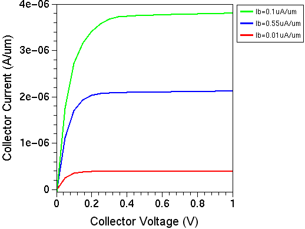

Sentaurus Device
12. Special Focus: Bipolar Ic–Vce Device Simulation
12.1 Overview
12.2 Electrode Section
12.3 Physics Section
12.4 Math Section
12.5 Solve Section
Objectives
- To demonstrate how to perform a bipolar Ic–Vce device simulation in Sentaurus Device.
12.1 Overview
This section demonstrates a bipolar Ic–Vce device simulation for different base currents.
The complete project can be investigated from within Sentaurus Workbench in the directory Applications_Library/GettingStarted/sdevice/BJTcurrentBC.
Click to view the primary file sdevice_des.cmd.
During the simulation, first the base current is ramped to certain predefined levels, and the results are saved in separate files. For the second simulation phase, the saved solutions are reloaded and, for each solution, a collector bias sweep is performed.
12.2 Electrode Section
Initially, Dirichlet (voltage) boundary conditions are set for all bipolar transistor terminals:
Electrode{
{ name="base" voltage=0 }
{ name="emitter" voltage=0 }
{ name="collector" voltage=0 }
}
12.3 Physics Section
The Auger recombination process inside the base is a dominant physical mechanism. Therefore, it is activated inside the Recombination section:
Physics{
Recombination(
SRH(DopingDep)
Auger
)
Mobility( DopingDep HighFieldSaturation)
EffectiveIntrinsicDensity( OldSlotboom )
}
12.4 Math Section
The ErrReff statements define the reference carrier density values used to determine whether a simulation converges. Generally, the smaller these values, the tighter the convergence requirement:
Math{
Extrapolate
RelErrControl
Digits=5
ErrReff(electron)= 1.0e7
ErrReff(hole) = 1.0e7
Iterations=20
Notdamped=100
}
12.5 Solve Section
After the buildup of the initial guess, the consequent simulations are performed in three steps.
In the first step, the base electrode bias is ramped up to 0.5 V. Then, the boundary condition (BC) is switched to the current BC (Neumann) using the Set command. Afterwards, the initial base electrode current level, as set by the Ib_ini project parameter value, is established in the second Quasistationary section. This is useful since the base current level remains unclear up to this point.
Solve {
Coupled(Iterations=100){ Poisson }
Coupled{ Poisson Electron Hole }
Quasistationary (
InitialStep=0.01 Increment=1.3
MaxStep =0.2 MinStep = 1e-6
Goal{ Name="base" Voltage=0.5 }
){ Coupled {Poisson Electron Hole } }
Set( "base" mode current )
Quasistationary (
InitialStep=0.01 Increment=1.3
MaxStep =0.2 MinStep = 1e-6
Goal{ Name="base" Current=@Ib_ini@ }
){ Coupled {Poisson Electron Hole } }
...
In the second step, the base current is ramped from its initial value of 1e-8 to 1e-7 A/μm, set by the Ib_end project parameter. Along this ramp, the solutions are saved at predefined time points. The NoOverWrite option instructs Sentaurus Device to create unique file names for each saved solution, such as n@node@_Ib_0000_des.sav, n@node@_Ib_0001_des.sav, and n@node@_Ib_0002_des.sav. Therefore, @node@ represents the node number in the given Sentaurus Workbench project.
...
Quasistationary (
InitialStep=0.01 Increment=1.3
MaxStep =0.2 MinStep = 1e-6
Goal{ Name="base" Current=@Ib_end@ }
){ Coupled {Poisson Electron Hole }
Save(FilePrefix="n@node@_Ib" Time=(0.0;0.5;1) NoOverWrite )
}
...
In the third step, the saved solutions are reloaded using the Load command. The NewCurrentPrefix command opens a new output (.plt) file for each of the simulated Ic–Vce characteristics. For each loaded solution, that is, for each base current level, a collector bias sweep is performed to raise the collector bias from 0 V to 1 V:
...
NewCurrentPrefix="Ib0_"
Load(FilePrefix="n@node@_Ib_0000")
Quasistationary (
InitialStep=0.01 Increment=1.3
MaxStep =0.2 MinStep = 1e-6
Goal{ Name="collector" Voltage=1.0 }
){ Coupled {Poisson Electron Hole}
...
NewCurrentPrefix="Ib2_"
Load(FilePrefix="n@node@_Ib_0002")
Quasistationary (
InitialStep=0.01 Increment=1.3
MaxStep =0.2 MinStep = 1e-6
Goal{ Name="collector" Voltage=1.0 }
){ Coupled {Poisson Electron Hole}
}
}
The last Sentaurus Visual node in the project assembles and plots the simulated curves in a single plot.

Figure 1. BJT collector current as a function of collector voltage for three different base current values.
Copyright © 2022 Synopsys, Inc. All rights reserved.